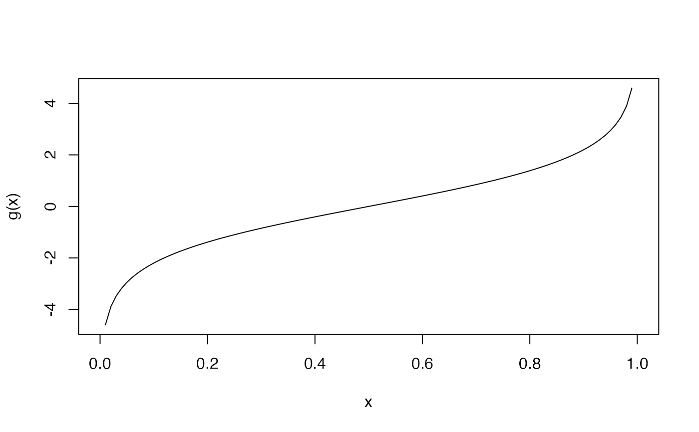
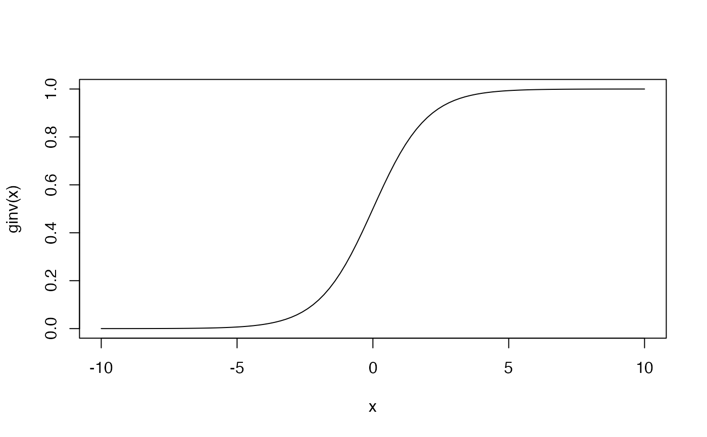

![[Experimental]](figures/lifecycle-experimental.svg)
log_link object provides a way to implement logit link function that
maxlogL needs to perform estimation. See documentation for
maxlogL for further information on parameter estimation and implementation
of link objects.
logit_link()Value
A list with logit link function, its inverse and its name.
Details
logit_link is part of a family of generic functions with no input arguments that
defines and returns a list with details of the link function:
name: a character string with the name of the link function.g: implementation of the link function as a generic function inR.g_inv: implementation of the inverse link function as a generic function inR.
There is a way to add new mapping functions. The user must specify the details aforesaid.
See also
Other link functions:
NegInv_link(),
log_link()
Examples
#--------------------------------------------------------------------------------
# Estimation of proportion in binomial distribution with 'logit' function
# 10 trials, probability of success equals to 30%)
N <- rbinom(n = 100, size = 10, prob = 0.3)
phat <- maxlogL(x = N, dist = 'dbinom', fixed = list(size=10),
link = list(over = "prob", fun = "logit_link"))
summary(phat)
#> _______________________________________________________________
#> Optimization routine: nlminb
#> Standard Error calculation: Hessian from optim
#> _______________________________________________________________
#> AIC BIC
#> 373.7152 373.7152
#> _______________________________________________________________
#> Estimate Std. Error Z value Pr(>|z|)
#> prob 0.29400 0.01441 20.41 <2e-16 ***
#> ---
#> Signif. codes: 0 '***' 0.001 '**' 0.01 '*' 0.05 '.' 0.1 ' ' 1
#> _______________________________________________________________
#> Note: p-values valid under asymptotic normality of estimators
#> ---
# Link function name
fun <- logit_link()$name
print(fun)
#> [1] "logit"
# Link function
g <- logit_link()$g
curve(g(x), from = 0, to = 1)

# Inverse link function
ginv <- logit_link()$g_inv
curve(ginv(x), from = -10, to = 10)

#--------------------------------------------------------------------------------